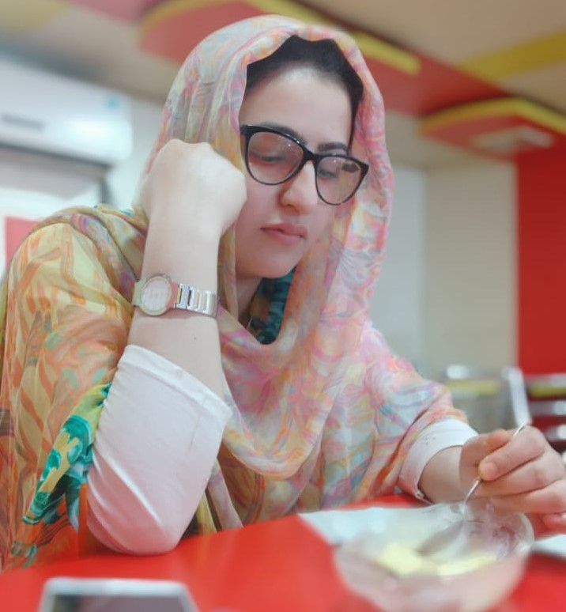

About me!
I am enrolled in IMD and this is my first time working with Git hub. I am excited to be a part of the program where I can explore. I am amazed how photography is impeded with programming and digital graphics. I joined the program in May 10th and on the first day got a chance to see all the faculty members and students.
My name is Tyba Yousuf. I am a native of India and have completed a bachelors's degree in Computer Science in 2016. For the last 3 years, I was working as a front-end developer in a renowned organization called Secure Software Solutions in India. One of the things about the program that piqued my curiosity is the opportunity to don many hats. Currently, I am in Level 1 and attending lectures from home, which is something that I never thought of.I am a keen learner, ready to grasp new things. I get easily bored while reading books and newspapers.